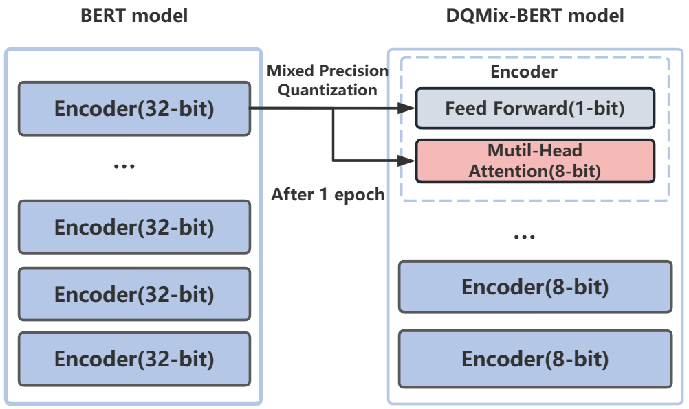

谭 艳硕士二年级
中国科学院大学，网络空间安全学院 社交平台：
我的研究兴趣包括模型压缩，PLMs以及AI+Science 目前我正在研究如何压缩和加速PLMs，以及部署模型于边缘设备。 |
|

教育经历
-
中国科学院大学网络空间安全学院 网络与信息安全2021.09 – 至今
-
湖南理工学院信息科学与工程学院 计算机科学与技术2017.09 – 2021.07
最新动态
- [06/2023] SMC 2023接收一篇模型压缩的工作
- [09/2022] 我加入角井成为一名AI算法实习生
- [09/2021] 我在UCAS攻读硕士学位
- [06/2021] 我获得湖南理工学院毕业工学学士学位
- [04/2021] 我成为信息工程研究所的一名实习生
科研经历
|  | DQMix-BERT:xxxx. Yan Tan, Lei Jiang, Peng Chen, Chaodong Tong. the IEEE International Conference on Systems, Man, and Cybernetics ( SMC), 2023. [paper] |
实习经历
-
角井(北京)生物技术有限公司 高性能技术研发部AI算法实习生 2022.09 – 2022.12
主要工作: 蛋白质结构预测
-
中国科学院信息工程研究所实习生 2021.04 – 2021.08
主要工作: Golang&Java 开发
项目经历
-
社交舆情分析2023.03 – 2023.04
内容：根据社交用户之间的交互信息和用户自身的行为进行特征工程，利用BERT模型预测用户舆情倾向，利用 TopK 排序算法选取社交账号 K 个，生成可视化分析
-
新浪微博数据搜索与情感分析系统2021.09 – 2021.12
内容：面向微博数据进行情感分析，对采集数据进行数据清洗，并进行可视化呈现
-
工会办公系统2019.09 – 2021.12
内容：统一管理教师代表大会提案以及处理提案的平台
-
教师就餐补助管理信息系统2019.03 – 2019.07
内容：学校后勤处的教师就餐补助管理系统，针对不同就餐地点分发不同额度补助
荣誉 & 奖项
| 2021 年湖南省岳阳市优秀毕业生 |
| 2019 年国家励志奖学金 |
| 2020 年湖南理工学院 ACM 竞赛二等奖、数学竞赛三等奖 |
| 英语 CET-6、软件设计师资格证、大数据初级工程师资格 |
© Yan Tan | 最后更新：2023.06